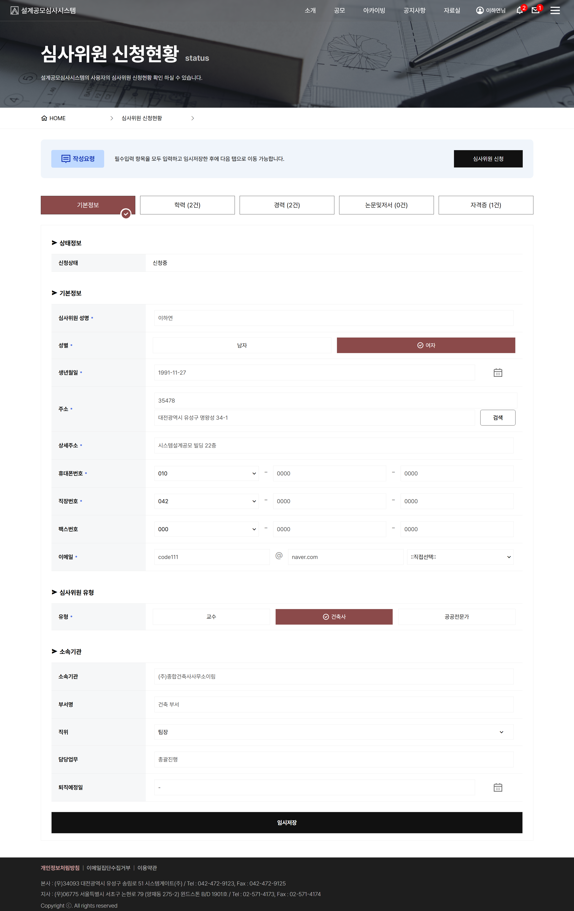

REGISTRATION FORM
체계적인 스텝(Step)별 입력구조 및 임시저장 지원 UI
상단에 '기본정보 - 학력 - 경력 - 자격면허 - 저서/논문'으로 이어지는 단계별 탭 스텝을 배치하여 방대한 신청서 작성 과정을 명확히 안내합니다. 필수 작성 항목 강조 및 주소 검색, 휴대폰 본인인증 전용 모달 연결과 함께 하단 '임시저장' 버튼을 두어 사용자의 데이터 손실을 방지하고 작성 편의성을 대폭 향상시켰습니다.